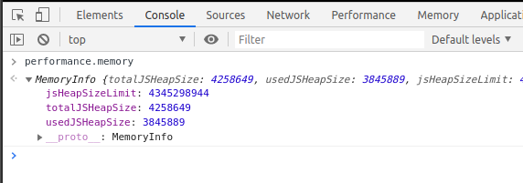
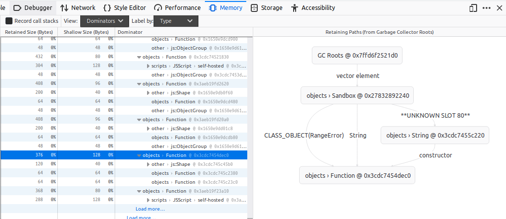
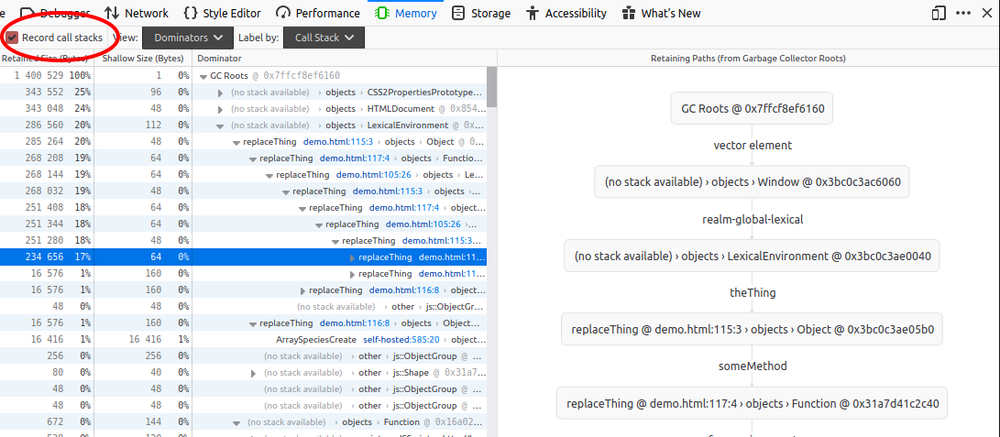
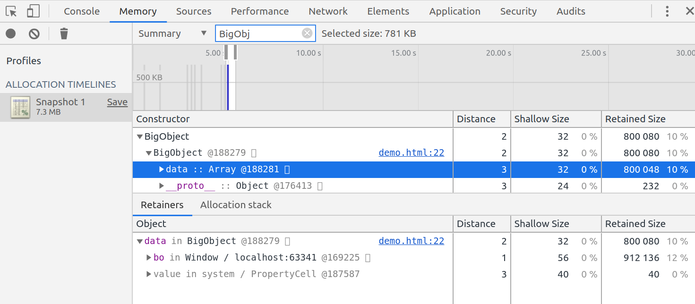
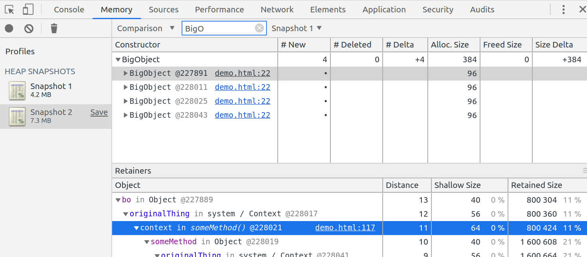

Maciej Gołaszewski
"WarsawJS Meetup: Debugging memory leaks" [EN] 2019-12-12
Memory management in JavaScript
JavaScript automatically allocates memory when objects are created.
Garbage collection - is a process of automatically freeing memory when those objects are no longer used.
Memory life-cycle:
allocate
use
release
Step 1: Allocate
Initial declaration of primitives (like Number or String).
For Object & Array - it also allocates memory for contained values.
Function declaration (() => {}) allocates a callable object (Function).
Object creation new Foo(), new Date(), etc.
Element creation - document.createElement( 'div' ).
Array and string manuipulation methods: array.concat( otherArray ), 'JavaScript'.substr( 0, 4 ),
...
Step 2: Use
Source giphy .
Step 3: Release
The Garbage collector finds the memory which is no longer need.
All modern browsers uses the "mark-and-sweep" algorithm to detect objects that are no longer needed by finding "unreachable objects".
Source Google Tools for Web
Developers: Memory Terminology .
As of 2019 We cannot release memory manually (call the garbage collector).
Common causes of memory leaks
Reference in global objects.
Forgotten event listeners & callbacks.
Referenced, detached DOM nodes.
Variables and closures in shared lexical scope.
But only if those are not needed by the application at given time. Otherwise those are valid objects.
Available Tools
Google Chrome dev tools - memory tab.
Firefox dev tool - memory tab.
Use window.performance.memory to programmatically read used memory.

Using the tools - preparation
Run your browser with all features striped down.
google-chrome \
--disable-extensions \
--disable-plugins \
--incognito
http://example.com
Firefox dev tools


Chrome dev tools - allocation timeline

Chrome dev tools - comparing snapshots

Live debugging
Source giphy .
Example: Accidental global (Demo )
document.getElementById( 'ml-global' )
.addEventListener( 'click', () => {
// window.bo = new BigObject();
// bo = new BigObject();
this.bo = new BigObject(); // this === window
} );
Example: Intermediate values (Demo )
const config = { bo: new BigObject(), foo: 'bar',
interval: 1000 };
logSomething( config );
function logSomething( config ) {
setInterval( () => { // Also: calback!
console.log( config.foo );
}, config.interval );
}
let theThing = null;
function replaceThing() {
const originalThing = theThing;
function unused() {
if ( originalThing ) {
// ...
}
}
theThing = {
bo: new BigObject(),
someMethod: function() {
// ...
}
};
}
Example: Forgotten stuff (Demo )
const bo = new BigObject();
bo.node = document.getElementById( 'a-div' )
function detachNode() {
document.getElementById( 'a-div' ).remove(); // Removes from the DOM
}
setInterval( () => { // Interval is not cleared
console.log( bo[ 3 ] );
}, 500 );
console.log( bo ); // bo resides in console GC root
ProTips™
Be careful with anonymous functions for callbacks (if the scope is shared).
Pass only what you need to functions.
De-register callbacks
Consider using WeakMap instead of Map.
GC must pause execution to collect memory.
Measure, when testing - disable all addons.
Hidden garbage collector: google-chrome -js-flags="--expose-gc" - window.gc().